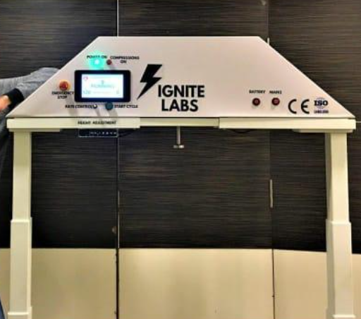
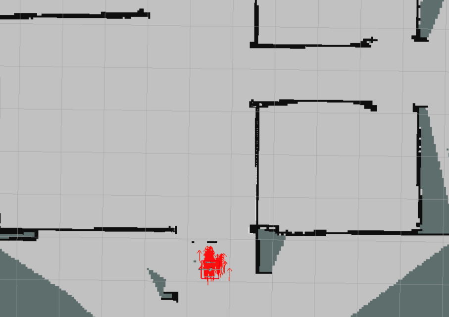
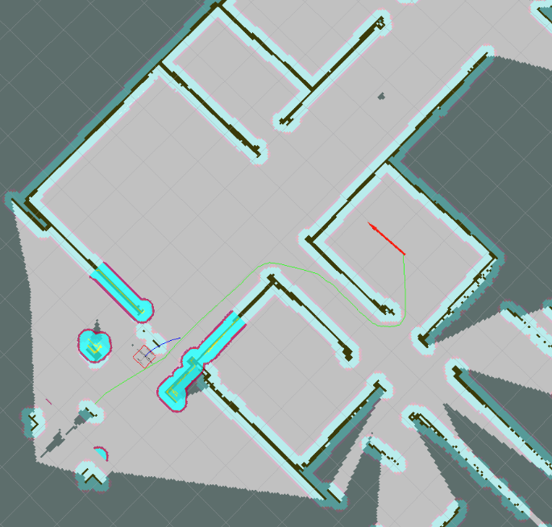
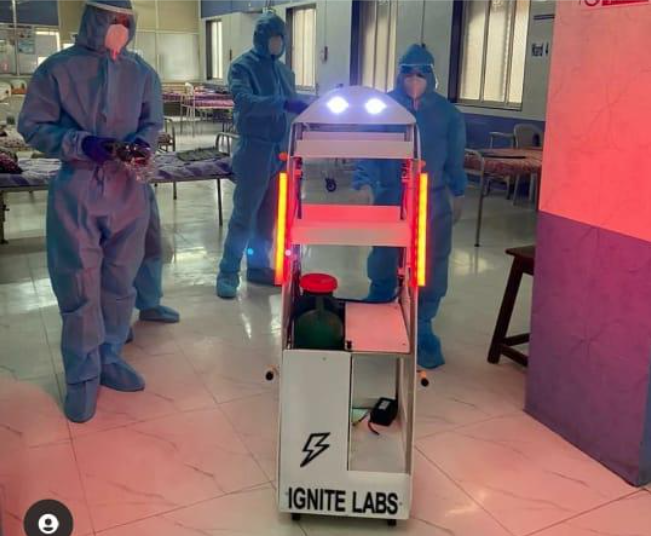
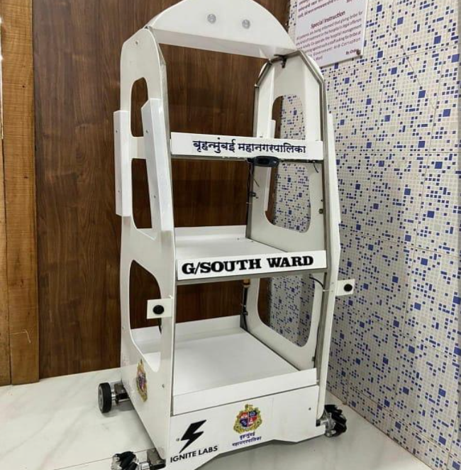
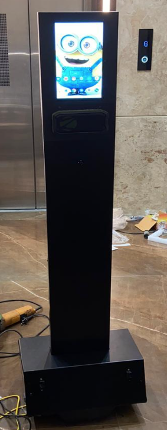
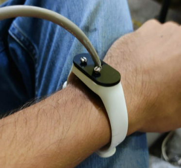

Automated CPR - Saving Lives

In this pandemic situation, with the number of patients increasing consistently, the need arises for an automated machine with higher precision and efficiency.
This machine can be easily deployed and set up within a minute and start the process of resuscitation immediately and accurately.
It can also be adjusted so that just enough force is applied at the exact position required.
Deployed: BKC Jumbo COVID Facility, BKC, Mumbai
Autonomous Drone Localization and Mapping
 
I focused on the development of the SLAM system for the MAVs based on IMU, vision and laser sensor and fusing different state-of-the-art SLAM methods. The system robustly obtains the 6-DoF pose of the MAV within a local map of the environment. Here, I considered a minimum sensory configuration based on a frontal monocular camera, an IMU and an altimeter. A 2D laser sensor is used to obtain a local 2.5D map and a footprint estimation of the pose of the MAV, that improve pose estimation in environments with few visual features and/or in low light conditions. The system has been validated with two low-cost commercial drones with different sensor configurations and a remote control unit using a distributed node system based on Robot Operating System (ROS). The experimental results show that sensor fusion improves position estimation and the obtained map under different test conditions.
Med-Robot

Medical robots are a need in today’s pandemic struggle to help save the lives of the frontline workers by preventing them from exposing themselves to the COVID wards.
The primary function of this robot is the transportation of medicine inside the COVID wards for the COVID-19 patients, as well as, checking the vitals of the patients such as SpO2 level and their body temperature through various sensors attached on the robot.
Deployed: BKC Jumbo COVID Facility, BKC, Mumbai
Food-delivery Robot

The primary function of this robot is the transportation of food inside the COVID wards for the COVID-19 patients. It was teleoperated by skilled engineers from a safe and enclosed space.
Deployed: BKC Jumbo COVID Facility, BKC, Mumbai
Telecommunication Robot

The primary function of this robot is for audio/video communication between doctor and COVID-19 patients and between the patients and their relatives.
Deployed: BKC Jumbo COVID Facility, BKC, Mumbai
Liner Diameter Measurement Device
This device is primarily used to measure the liner diameter of the pistons for ship engines. As these cylinders are subject to regular wear, it is important to measure the liner diameter for determining the amount and nature of wear and maintaining peak efficiency by thorough maintenance. The current methods of measuring the liner diameter are lengthy, less accurate and risky for personnel to carry out. With this device, the readings are much more accurate and a lot of time is saved in the process. The machine can be easily deployed inside the piston cylinder of the engine and start the process remotely.
Wrist Oximeter

The wrist oximeter device is used for COVID-19 patients at COVID facilities and hospitals to obtain accurate SpO2 level readings for doctors to correctly determine the state of their patients 24/7 with minimal contact. Also, to monitor the patients continuously so that immediate action can be taken based on the readings/values obtained.
Deployed: BKC Jumbo COVID Facility, BKC, Mumbai